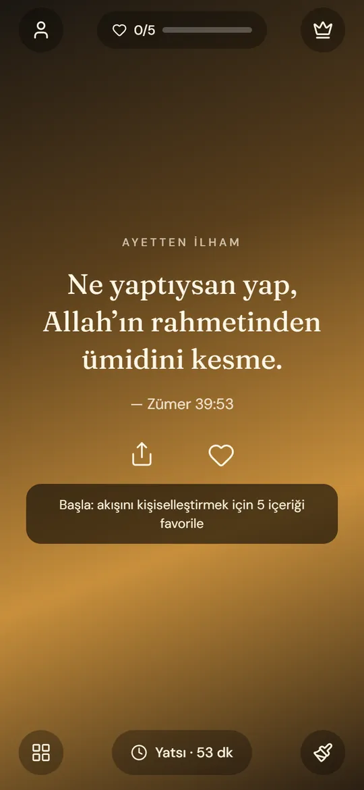
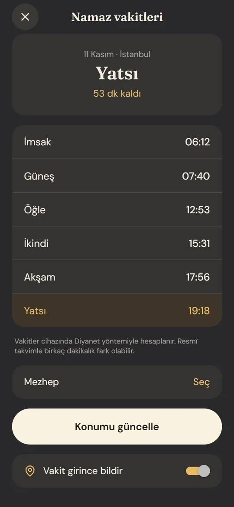
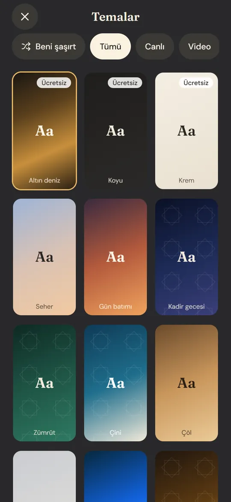
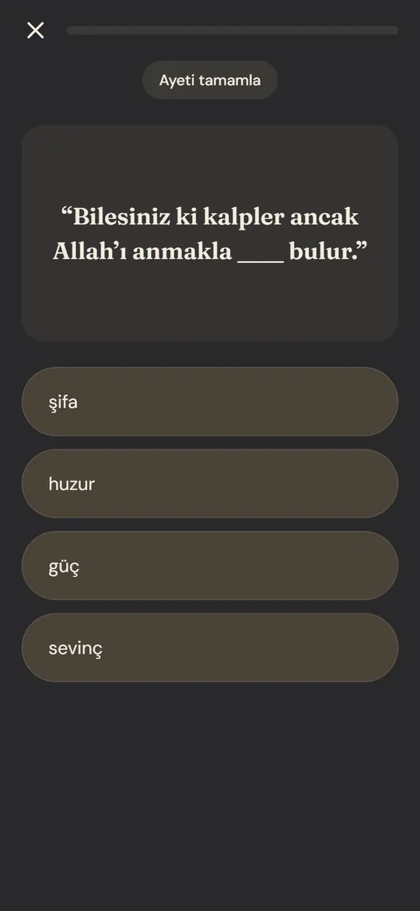
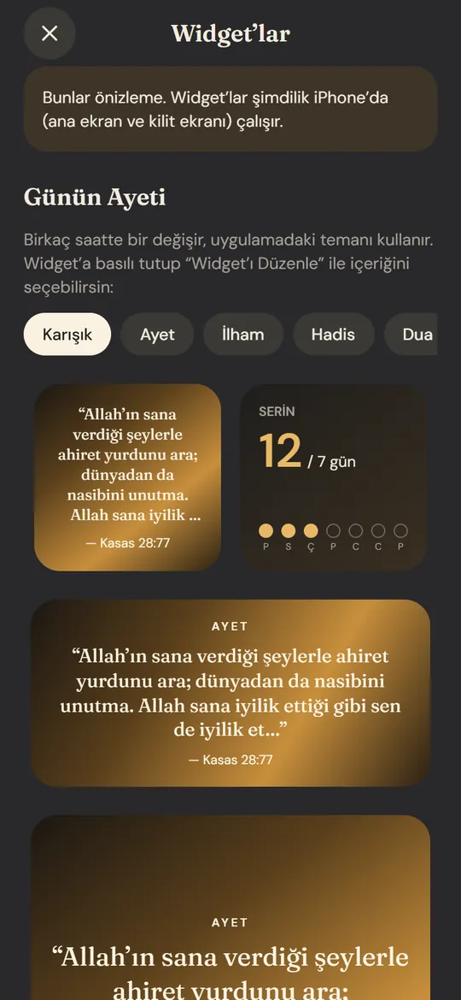
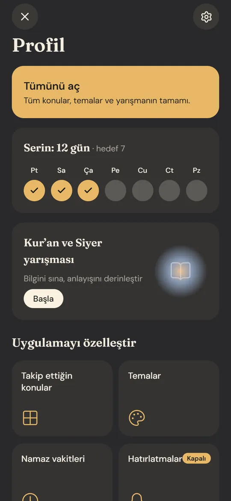

Kalbin her an Allah’ı ansın.
Ayet, hadis, dua ve zikir: kilit ekranında, ana ekranda, seçtiğin saatte. Namaz vakitleri de yanında. iPhone için.
- İmsak06:11
- Güneş07:39
- Öğle12:53
- İkindi15:32
- Akşam17:57
- Yatsı19:19
Ekranlar canlı: saat ve vakitler şu an İstanbul için yaklaşık hesaplanıyor. Uygulama senin konumunu kullanır; izin vermezsen İstanbul’la başlar.
Uygulamanın içinden
Akış, vakitler, temalar, yarışma, widget’lar ve profil. Kaydırarak bak.

Akış Her kaydırışta yeni bir ayet, hadis ya da dua. 
Vakitler Diyanet yöntemiyle, telefonda hesaplanır. 
Temalar Seherden Kadir gecesine, canlı temalar dahil. 
Yarışma Ayeti tamamla, siyeri hatırla. 
Widget’lar Ana ekranda ve kilit ekranında. 
Profil Serin, ayarların, yarışma.
Seher mi, gece mi?
Akışın arka planını sen seçersin. Altın deniz, Koyu ve Krem ücretsiz. Geri kalanı Premium’da: yıldızların yanıp söndüğü, yağmurun yağdığı 24 canlı tema ve gerçek görüntülü video temalar dahil. Aşağıdan birine dokun, telefon değişsin.
On üç saniyede Hadıra.
Seherden geceye bir gün: kilit ekranında sıradaki vakit, serin, gün içinde gelen bir zikir.
Sessiz video. Oynatmak ya da durdurmak için üstüne dokun.
Kur’an-ı Kerim kaç sureden oluşur?
Bildiğini sına.
Kur’an ve siyer üzerine sorular. Telefondaki üç soru örnek; cevaplamayı dene.
Yarışmanın bir kısmı ücretsiz, tamamı Premium’da. Cevapların telefonunda kalır.
Verilerin telefonunda kalır
Favoriler, seri, ayarlar ve yarışma cevapları bir sunucuya gitmez. Konum yalnızca namaz vakitleri için kullanılır.
Abonelik doğrulanırken Apple ve RevenueCat’e anonim bir kimlik ile satın alma kaydı gider. Bu sitede çerez ya da ölçüm kodu yok.
Hadıra yakında App Store’da.
iPhone için hazırlanıyor. Yayına girdiğinde bu düğme seni doğrudan App Store sayfasına götürecek.
iPhone içinApp Store’da yakındaHaber almak ya da soru sormak için: destek@hadira.app